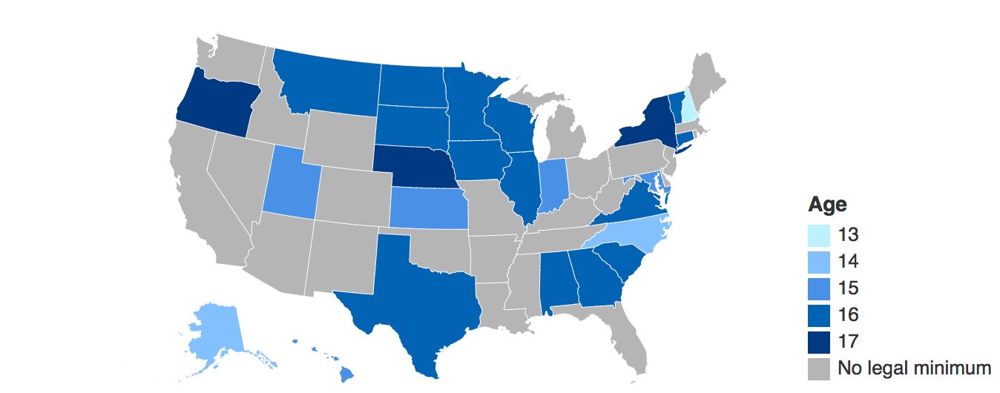

What is Child Marriage?
Child Marriage is an issue in America
Between 2000 and 2015, over 200,000 children were married in America. Over 50% of the children were girls. When you think of child marriage, you may think of girls being married in third-world and developing countries, but child marriage is a problem in America as well. Because of state laws allowing minors to marry with parental consent, many children are married before 18. The good news? Child marriage rates in America are going down every year, but child marriage will continue to happen in America without serious action. Explore to find more information about child marriage, child marriage rates in America, and how the public can take action against this obscenity.
Did you know:
The youngest age you can get married by state

Shivani to rephrase from diff websites In most states, you must be at least 18 years old to marry. However, state laws make exceptions if minors have parental consent, approval of a judge or are recognised as adults (i.e. emancipation minors). As of December 17, minors of any age can legally marry in 25 states if they meet their state's excetions.Shivani ....(add reference link to source webpage and add reference there)